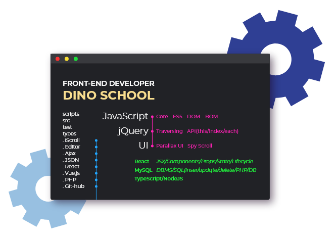

프론트엔드개발
취업 아카데미
DINO
SCHOOL
취업/이직 준비생
포트폴리오 제작
4.5개월/36강

프론트엔드 개발자로 취업하고자 하는 학생들을 위한 과정으로,
웹/모바일 사이트의 프론트엔드를
설계 개발할 수 있는 능력을 배양하는
"디노스쿨" 취업아카데미입니다.
- 교육일정
- 2020.10.29 - 2021.03.11
- 교육시간
- 화, 목 / 10:00 - 17:00
- 교육장소
- 아카데미정글 (강남 신사)
- 수 강 료
- 총 330만원
- 준 비 물
- 개인 노트북(권장)


 04
백엔드 기술에 대해서도 배울 거예요.
04
백엔드 기술에 대해서도 배울 거예요.